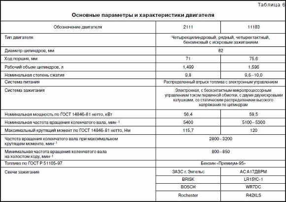

ТЕХНИЧЕСКАЯ ХАРАКТЕРИСТИКА АВТОМОБИЛЯ
ОСНОВНЫЕ РЕГУЛИРОВОЧНЫЕ И КОНТРОЛЬНЫЕ ПАРАМЕТРЫ

* Замеряется по специальной методике.
** Получен при испытаниях по Директивам ЕЭС 93/116 и 99/100 на беговых барабанах.
Служит только для сравнения различных моделей автомобилей и эксплуатационной нормой не является.
НОМИНАЛЬНЫЕ ЗНАЧЕНИЯ ЗАПРАВОЧНЫХ ОБЪЕМОВ, Л
Топливный бак . . . . . . . . . . . . . . .. . . . . . . .. . . . . . . .. . . . . . . .. . . . . 42,5
Система охлаждения двигателя (включая систему
отопления салона) . . . . . . . . . . . . . . . . . . . . . . . . . . . . . . . . . . . . . . . . .7,8
Система смазки двигателя . . . . . . . . . . . . . . . . . . . . . . . . . . . . . . . . . . . 3,5
Картер коробки передач . . . . . . . . . . . . . . . . . . . . . . . . . . . . . . . . . . . . .3,3
Система гидропривода тормозов . . . . . . . . . . . . . . . . . . . . . . . . . . . . . .0,435
Бачок омывателей ветрового стекла . . . . . . . . . . . . . . . . . . . . . . . . . . . . 4,2
Гидравлическая стойка передней подвески . . . . . . . . . . . . . . . . . . . . . . .0,31
Амортизатор задней подвески. . . . . . . . . . . . . . . . . . . . . . . . . . . . . . . . 0,25
Основные регулировочные и контрольные параметры
Зазоры в механизме привода клапанов на холодном (18–20 °С)
двигателе, мм:
для впускных клапанов . . . . . . . . . . . . . . . . . . . . . . . . . . . . . . . . . 0,2±0,05
для выпускных клапанов . . . . . . . . . . . . . . . . . . . . . . . . . . . . . . . . 0,35±0,05
Зазор между электродами свечей зажигания, мм . . . . . . . . . . . . . . . 1,00—1,13
Свободный ход рулевого колеса в положении, соответствующем
движению по прямой, не более, град . . . . . . . . . . . . . . . . . . . . . . . . . . . . . 5
Свободный ход педали тормоза при неработающем двигателе, мм . . 3—5
Ход педали сцепления, мм:
при регулировке . . . . . . . . . . . . . . . . . . . . . . . . . . . . . . . . . . . . . . 125—135
в эксплуатации . . . . . . . . . . . . . . . . . . . . . . . . . . . . . . . . . . . . . . .150—160
Минимально допустимая толщина накладок для колодок передних
и задних тормозов, мм . . . . . . . . . . . . . . . . . . . . . . . . . . . . . . . . . . . . . .1,5
Температура жидкости в системе охлаждения прогретого двигателя
при температуре воздуха 20—30°С, полной нагрузке и движении
со скоростью 80 км/ч, не более, °С . . . . . . . . . . . . . . . . . . . . . . . . . . . . .95
Максимально допустимый расход масла в гарантийный период,
не более, л/1000 км . . . . . . . . . . . . . . . . . . . . . . . . . . . . . . . . . . . . . . .0,3
Прогиб ремня привода генератора при усилии 100 Н (10 кгс), мм . 10—15
Ход рычага стояночного тормоза, зубцов:
при регулировке . . . . . . . . . . . . . . . . . . . . . . . . . . . . . . . . . . . . . . . . 2—4
в эксплуатации . . . . . . . . . . . . . . . . . . . . . . . . . . . . . . . . . . . . . . . . .2—8
Плотность электролита аккумуляторной батареи (6СТ-55) при 25 °С
для умеренного климата, г/см3 . . . . . . . . . . . . . . . . . . . . . . . . . . . . . . 1,28
Уровень охлаждающей жидкости в расширительном бачке при холод
ном двигателе . . . . . . . . . . . . . . . . . . . . . . . . . .на 25—30 м выше метки“MIN”
Уровень жидкости в бачке гидропривода тормозов при снятой
крышке и новых накладках тормозных колодок . . . . . . . . . . . . . .до метки“МАХ”
Уровень масла в коробке передач . . . . . . . . . . . . . . .между рисками указателя
Схождение передних колес под нагрузкой 3200 Н (320 кгс), мм . . . . . . 0±1
Развал передних колес под нагрузкой 3200 Н (320 кгс), град . . . . . . 0°±30′
То же при замере между ободом и вертикалью, мм . . . . . . . . . . . . . . . . . 0±3
Продольный наклон оси поворота колеса под нагрузкой
3200 Н (320 кгс), град . . . . . . . . . . . . . . . . . . . . . . . . . . . . . . . . .1°30′±30′